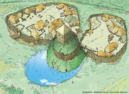

Le jardin médieval servait autrefois a cultiver des plantes pour en faire des remèdes, mais aussi a se procurer de la nourriture. On peut y retrouver des légumes, des fruits ainsi que des plantes. Une roseraie embeilit également le jardin.
Dans le jardin medieval, on peut également retrouver des éléments du patrimoine, par exemple, l'ancien portail du cimetière ou l'ancienne porte en cintre su Prieuré.
